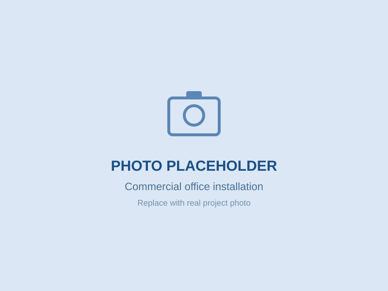

Northern Access Floors delivers raised access flooring solutions for commercial offices, fit-out projects, data centres, education, healthcare and public-sector developments throughout the United Kingdom.
Northern Access Floors provides the design support, supply and installation of raised access flooring systems for projects ranging from small office refurbishments to major commercial developments.
We work with main contractors, fit-out specialists, consultants and end users to deliver flooring solutions safely, professionally and on programme.
Whether your project requires a standard office raised floor, heavy-duty data centre installation or refurbishment of an existing flooring system, our experienced team can help.

Delivering raised access flooring installations throughout the UK.
We understand construction programmes, site logistics and compliance requirements.
Safety and quality remain at the centre of everything we do.
Supporting projects throughout England, Scotland and Wales.
Fast quotations and technical assistance when you need it.

Raised access flooring for CAT A and CAT B office environments.
High-performance flooring systems for critical environments.
Universities, colleges and schools.
Hospitals and specialist healthcare facilities.
Secure environments and public-sector developments.
Specialist flooring solutions for demanding environments.
Send us your drawings and specifications for a competitive quotation.
Whether you're pricing a tender, planning a fit-out or developing a data centre, our team can help.